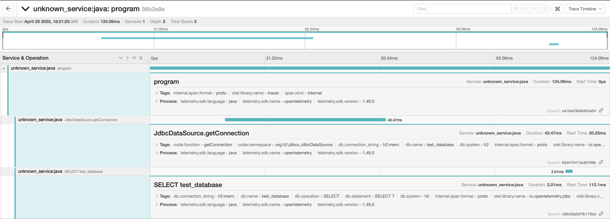

otel4s-doobie
Installation
This library is currently available for Scala binary versions 2.13 and 3.3+.
To use the latest version, include the following in your build.sbt:
libraryDependencies += "io.github.arturaz" %% "otel4s-doobie" % "0.7.0"
javaOptions += "-Dcats.effect.trackFiberContext=true"Or build.mill if you are using mill:
override def ivyDeps = Agg(
ivy"io.github.arturaz::otel4s-doobie:0.7.0"
)and .mill-jvm-opts:
-Dcats.effect.trackFiberContext=trueThe code from main branch can be obtained with:
resolvers ++= Resolver.sonatypeOssRepos("snapshots")
libraryDependencies += "io.github.arturaz" %% "otel4s-doobie" % "0.7.0-6-fd7fcf4-SNAPSHOT"For mill:
override def repositoriesTask = T.task {
super.repositoriesTask() ++ Seq(
coursier.Repositories.sonatype("snapshots")
)
}
override def ivyDeps = Agg(
ivy"io.github.arturaz::otel4s-doobie:0.7.0-6-fd7fcf4-SNAPSHOT"
)You can see all the published artifacts on MVN Repository.
Versions table
Due to the usage of RC versions, binary compatibility is finicky. Consult this table to know which versions are compatible.
| Library Version | Doobie Version | Otel4s Version | Cats Effect Version |
|---|---|---|---|
| 0.7.x | 1.0.0-RC9 | 0.13.0 | 3.6.0 |
| 0.6.0 | 1.0.0-RC9 | 0.12.0 | 3.6.0 |
| 0.5.0 | 1.0.0-RC9 | 0.12.0 | 3.6.0 |
| 0.4.0 | 1.0.0-RC8 | 0.12.0 | 3.6.0 |
| 0.3.0 | 1.0.0-RC8 | 0.12.0-RC3 | 3.5.7 |
| 0.2.0 | 1.0.0-RC8 | 0.12.0-RC2 | 3.5.7 |
| 0.1.0 | 1.0.0-RC5 | 0.12.0-RC2 | 3.5.7 |
Usage
import cats.effect.IO
import cats.effect.IOApp
import cats.effect.MonadCancelThrow
import doobie.Transactor
import doobie.implicits.toSqlInterpolator
import doobie.otel4s.tracing.TraceTransactor
import doobie.syntax.connectionio.toConnectionIOOps
import doobie.util.ExecutionContexts
import org.typelevel.otel4s.context.LocalProvider
import org.typelevel.otel4s.oteljava.OtelJava
import org.typelevel.otel4s.oteljava.context.Context
import org.typelevel.otel4s.oteljava.context.IOLocalContextStorage
import javax.sql.DataSource
object App extends IOApp.Simple {
def program[F[_]: MonadCancelThrow](xa: Transactor[F]): F[Int] = {
sql"""SELECT 1""".query[Int].unique.transact(xa)
}
override def run: IO[Unit] = {
// don't forget to add
// javaOptions += "-Dcats.effect.trackFiberContext=true"
implicit val provider: LocalProvider[IO, Context] =
IOLocalContextStorage.localProvider[IO]
OtelJava.autoConfigured[IO]().use { otel4s =>
// initialize your transactor the way you want
val xa: Transactor.Aux[IO, DataSource] = Transactor.fromDataSource[IO](
dataSource = ???,
connectEC = ExecutionContexts.synchronous
)
// wrap it with a TraceTransactor
val traceTransactor =
TraceTransactor.fromDataSource(otel4s.underlying, xa)
program[IO](traceTransactor).void
}
}
}This is how it looks after instrumentation:

{kind=link}
Using Hikari
Make sure you have the following libraries in your classpath
"org.tpolecat" %%% "doobie-hikari" % "<version>",
"io.opentelemetry.instrumentation" % "opentelemetry-hikaricp-3.0" % "<version>"Initialize a Transactor using TelemetryHikariTransactor
import cats.effect.IO
import cats.effect.IOApp
import cats.effect.MonadCancelThrow
import com.zaxxer.hikari.HikariConfig
import doobie.Transactor
import doobie.implicits.toSqlInterpolator
import doobie.otel4s.hikari.TelemetryHikariTransactor
import doobie.syntax.connectionio.toConnectionIOOps
import org.typelevel.otel4s.context.LocalProvider
import org.typelevel.otel4s.oteljava.OtelJava
import org.typelevel.otel4s.oteljava.context.Context
import org.typelevel.otel4s.oteljava.context.IOLocalContextStorage
import org.typelevel.otel4s.trace.Tracer
object App extends IOApp.Simple {
def program[F[_]: MonadCancelThrow: Tracer](xa: Transactor[F]): F[Int] = {
Tracer[F]
.span("program")
.surround(sql"""SELECT 1""".query[Int].unique.transact(xa))
}
override def run: IO[Unit] = {
// don't forget to add
// javaOptions += "-Dcats.effect.trackFiberContext=true"
implicit val provider: LocalProvider[IO, Context] =
IOLocalContextStorage.localProvider[IO]
(for {
otel4s <- OtelJava.autoConfigured[IO]()
tracer <- otel4s.tracerProvider.get("tracer").toResource
xa <- TelemetryHikariTransactor.fromHikariConfig[IO](
otel = otel4s.underlying,
config = {
val conf = new HikariConfig()
// set the right properties
conf
}
)
} yield (tracer, xa))
.use { case (tracer, xa) =>
implicit val _tracer: Tracer[IO] = tracer
program[IO](xa).void
}
}
}Credits
This library was created by Artūras Šlajus. You can find me as arturaz on the
Typelevel Discord Server in the #doobie channel.
Changelog
v0.7.1
v0.7.0
v0.6.0
v0.5.0
- Upgraded Doobie from
1.0.0-RC8to1.0.0-RC9. - Use opentelemetry-jdbc instead of custom transactor by @AlixBa.
- Add HikariTelemetryTransactor (metric+tracing) by @AlixBa.
v0.4.0
- Upgraded Otel4s from
0.12.0-RC3to0.12.0, which also bumps the cats-effect version from3.5.7to3.6.0.
v0.3.0
- Upgraded Otel4s from
0.12.0-RC2to0.12.0-RC3.
v0.2.0
- Upgraded Doobie from
1.0.0-RC5to1.0.0-RC8.
v0.1.0
- Initial release.